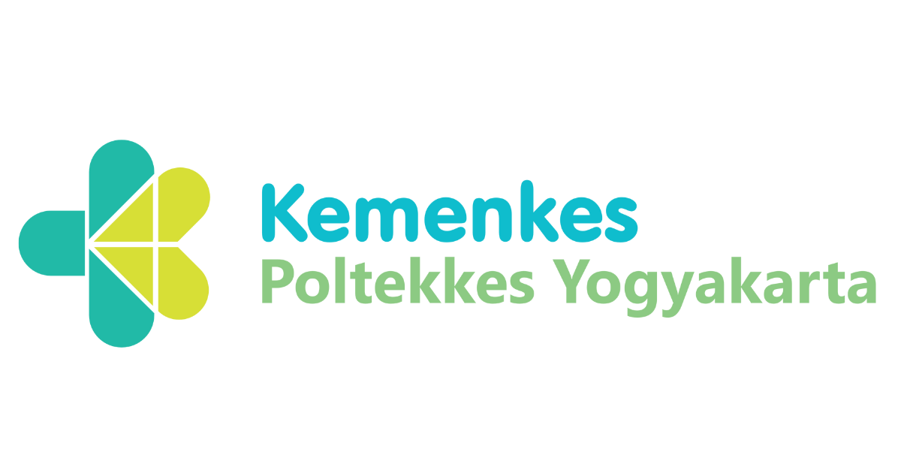
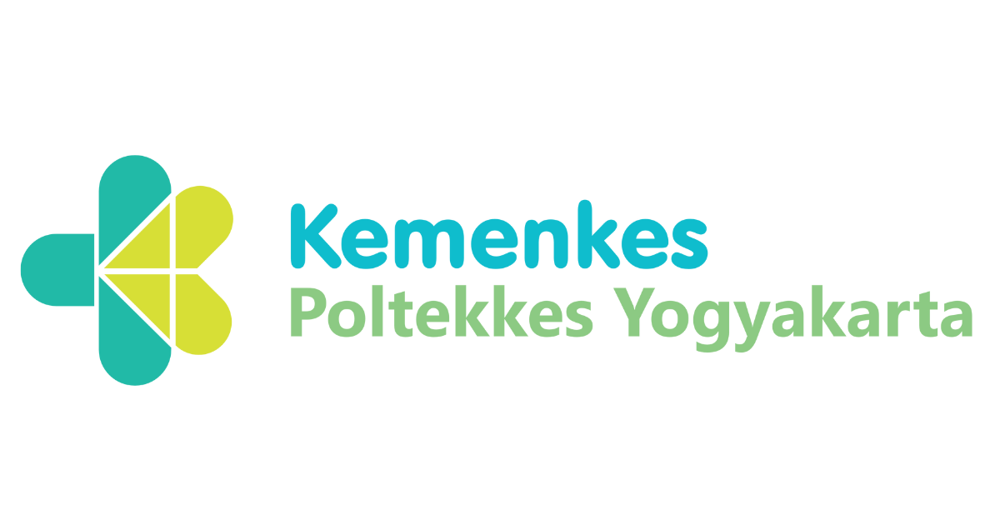

Tentang Kami
Mengenal lebih jauh tentang Nutri Herbal dan tim kami
Apa itu Nutri Herbal plus?
Nutri Herbal adalah multi-platform edukasi cetak dan digital yang berdedikasi untuk meningkatkan kesadaran masyarakat tentang pentingnya dalam menjaga kesehatan. Kami percaya bahwa pencegahan adalah kunci utama dalam menjalani hidup yang sehat dan berkualitas.
Melalui video edukasi, informasi mendalam, dan kalkulator interaktif, kami membantu Anda memahami manfaat herbal dan cara penggunaannya secara tepat untuk mencegah penyakit kronis seperti hipertensi.


Visi Kami
Menjadi platform edukasi terdepan dalam penyebaran pengetahuan tentang pencegahan penyakit kronis dan memberikan cara penanggulangannya di Indonesia.
Misi Kami
Memberdayakan masyarakat dengan pengetahuan kesehatan yang akurat, mudah dipahami, dan dapat diterapkan dalam kehidupan sehari-hari.
Tim Kami
Tim profesional yang berdedikasi untuk memberikan informasi kesehatan terbaik
Prof. Dr. Tri Siswati, SKM, M.Kes.
Ahli bidang kesehatan Masyarakat
Dosen Spesialis kesehatan Masyarakat dengan pengalaman 15+ tahun dalam bidang kesehatan.
Joko Susilo SKM, M.Kes.
Ahli Gizi
Dosen dan ahli gizi berpengalaman mengajar 35 tahun.
Noval Yahya
Mahasiswa jurusan gizi Poltekkes kemenkes Yogyakarta
Mahasiswa jurusan gizi Poltekkes kemenkes Yogyakarta dengan pengalaman dalam promosi kesehatan.
Mengapa Percaya Kami?
- Berbasis Riset Ilmiah - Semua informasi didukung oleh penelitian dan studi ilmiah terkini
- Tim Profesional - Didampingi oleh ahli gizi dan ahli kesehatan masyarakat bersertifikat
- Konten Akurat - Informasi diverifikasi dan diperbarui secara berkala
- Edukasi Berkelanjutan - Kami terus belajar dan mengembangkan konten terbaru untuk Anda
 
